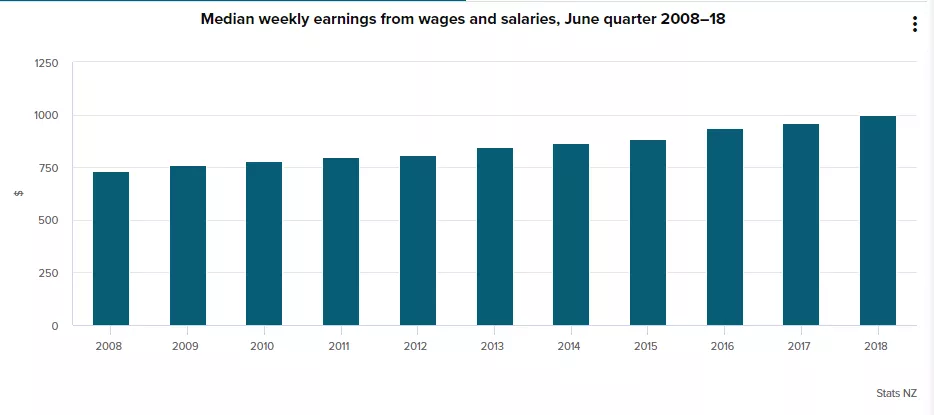

逃离996！拥抱新西兰！
逃离996！拥抱新西兰！
转自“中文先驱”公众号，原文
工作996，生病ICU。
近日，一场关于996加班制度的大规模抗议运动，帮搬砖社畜们的喊出了心里话。
不论“9点上班，9点下班，一周工作6天”这样的制度听起来是多么惨无人道，以马云刘强东为首的支持派老板们会用“毒鸡汤”告诉你，能在996的公司工作，这是福报！
而另一边，被996折磨得提前透支生命和发际线的员工们，也只敢在微博上说心里话。
大环境下个人的抗争总是显得特别无力，“世界那么大，我想去看看”，“我和公司八字不合”，“老板画的饼太大，我消化不良”，“公司附近的外卖都吃腻了”之类的辞职理由中，透露着种种无奈……
而有一部分人，选择了移民到这个与世无争的新西兰。
扔掉“996”，新西兰码农的幸福生活
Max 国内职业：软件工程师 移民后职业：软件工程师
Max曾是一名IT大牛：就职于一家大型IT公司的他，已经脱离了“码农”的基层生活，混到了中层，虽说不是什么大领导，但好歹手下也带着个小团队，赚的钱也够过小资的生活。
但他却总是觉得这不是自己想要的生活：“我们这种IT公司，都自嘲自己过的是“996”的生活。“996”的意思就是每天早九点到晚九点都泡在公司，一周通常还要上六天班。我感觉自己就是一台不停运转的机器，除了睡觉以外，基本没有自己的生活。吃饭都恨不得都掐着时间吃。加班文化在国内的IT业盛行，我几乎就没听说过哪个程序员不加班加点的。项目一来，整个团队都要像打了鸡血似的，从中层到基层一起加班加点，连累都懒得说了。”
长期的超负荷工作，让Max感慨赚了钱都没空花，每年见同事的时间不知道比见老婆的时间多几倍，结了婚也过着单身汉的生活，除了公司开恩给了五天的蜜月假(国家法律规定的晚婚假在公司形同虚设)，几乎就没怎么和老婆约过会。
“我个人很反感这种必须把工作凌驾于家庭上的生活模式，特别是在我有了小孩之后。因为工作忙，我只在老婆生孩子的时候休息了三天，这还算是待遇不错的了。在老婆怀孕的时候，我上司还让我出差了好几个月，根本不会考虑我妻子怀孕这种特殊情况。我一个同事的遭遇更值得同情，他妻子预产期临近，他还被公司硬性安排出差，结果他妻子独自在医院生的孩子，孩子都快满月了，他才第一次见着。”
长时间的压力和超负荷的工作，还让跨入30岁的Max身体亮起了红灯：抵抗力差、颈椎损伤、头晕乏力、暴瘦。而公司一名同事的遭遇，则让他彻底下决心放弃这种“工作机器”的生活：一个程序员同事得了急性肺炎，发高烧，在休息了仅仅一天后，又被拉到公司上班，而且参与加班到深夜。
有同事提出异议，怕被传染，结果领导让每人带上口罩继续工作，决口不提让病号休息的事。这件事让Max愤怒又害怕：“我感觉看到了自己的将来，干不动了累死在我的电脑旁边！”
辞职后的Max在妻子的支持下，幸运地申请到了银蕨签证，凭藉着自己多年的相关经验和不错的英语水平，又顺利地在奥克兰一家洋人IT公司找到工作。
“谈到现在的工作和生活，他表示相当满足： 说实在的，当初下决心辞职再换一个国家重新开始是下了很大的决心的，我父母也是特别不理解。刚到新西兰也是两眼一抹黑，我承认新西兰的工作是比国内难找多了，工作机会很少，我也是找了快半年才得到这份工作，没找到工作的时候心理压力别提多大了。 但我觉得找工作也要看运气吧，当然最重要的是你不能放弃，相信自己，持之以恒地投简历，精心准备每次面试，好运气才会降临。现在我又重新干起了基层码农的工作，在我们公司，还有好几位白发苍苍的洋人码农，所以在新西兰这个国度，真的没有国内竞争那么惨烈，你不会有到了一定年纪你没爬到什么职位就没有活路的感觉，整个人的状态比较平和，没那么急躁了。”
现在的Max享受著公司弹性的工作时间：每天工作8小时，几点来，几点走，你任选。没有打卡机，没人监督，全凭对员工的信任。公司还人性化地给员工准备了免费咖啡机、偶尔还会组织员工来一个high tea。Max终于过上了梦想中的“朝九晚五”的正常生活，下班就去接孩子放学、和家人一起吃晚餐，周末则带著妻儿去海边BBQ、玩沙子。
Max的幸福语录： 有人说我在国内的遭遇太极品，但也正是这极品的过往给了我改变生活的勇气。因为我的勇气，改变了自己及家人后半生的生活，我感觉非常自豪。“老婆孩子热炕头”，简单日子最有滋味，痛苦的加班生活，从此只存在在我的记忆中。
压力让我险些崩溃，现在终于可以做自己喜欢的事了
Sy Liang 国内职业：公司文案 移民后职业：自营民宿
Sy Liang在国内是一名资深文案，月薪不菲，连SY自己都坦言，得到这份高薪工作十分不易：“我以前在家乡是做老师的，后来感觉体制内的工作不太适合我的个性，就辞职去上海打拼。那是我第一次转行，真的很艰难，我做过销售、英文课程顾问，经历过站街拉客发广告，最难的时候一天就吃几片面包撑着生活。后来凭借能力，终于抓住一个好机会进入了一家不错的公司做文案，从初级的做到最资深，手下也带出不少人，也算是小有成就了。但压力重重的生活却没有因此而改变。”
由于是公司的“中流砥柱”，很多大项目老板都点名Sy亲自操刀撰写文案，一写就是几十万字。“要是把我写过的文案加起来，恐怕都能出几本书了，如果我走六六的路，或许就成了名作家了，哈哈。”
Sy谈到写文案的压力，真的是几天几夜也说不完：“文案这东西其实挺像广告业的，没有一个固定标准，你觉得你写的好，老板可能觉得根本没法看。好不容易老板觉得还不错了，客户又改主意了，又要推翻重来，几万字就这么泡汤了……我同事就常笑言我们这行婆婆太多，等著N个婆婆都满意了，我们这些小媳妇儿的半条命也差不多熬没了。”
谈到为何放弃高薪到新西兰重新开始，Sy表示自己没有过太多的纠结：“我放弃这份工作的原因很简单，就是为了我的女儿！”
在一次的重要项目中，Sy随公司的团队马不停蹄地穿梭在江南的各个城市调研、考察。白天要跑几百甚至上千公里的路程，晚上要熬夜写项目的文案，每天只睡3、4个小时成为常态。“实在是太累了，有一次我对着电脑写着写著就眼前一黑，直接趴键盘上晕倒了，醒来以后还是非常难受，同事把我送进医院，才知道我竟然怀孕了，而且因为过劳差点流产。因为我闺女命大，才保了下来。”
生完闺女后，Sy又重新投入到忙碌的工作。一次，Sy又在外出差赶文案，忽然接到家里的电话，老公告诉她一岁多的女儿发烧很厉害，哭著找妈妈。Sy当时就急哭了，请求老板让她回家，但老板却要求她完成这几天的工作再走。也就是那一次，Sy下了决心：不干了！钱没有还可以再赚，工作没了也能再找，但家人是唯一的。
辞了职的Sy随着先生配偶移民来到了奥克兰。与诸多刚移民过来就急于找工作的新移民不同，Sy不想再当朝九晚五的上班族了。有了新家，她每天都花很多心思在居家的布置上：摆些精致的小物件、淘些质量棒又独特的小家具、整理一下自己的花园。不仅热爱家居设计，来到了咖啡之乡的Sy还迷上了做咖啡：每个午后，整理完花园，她就窝在自家的小咖啡吧台前，瞇着眼睛晒会儿太阳，给自己磨一杯香浓的咖啡，再看着女儿在花园里跑跑跳跳。
别看Sy的日子看起来悠闲又愜意，其实她用心生活的同时也不耽误赚钱：Sy把家里的照片掛到全球知名的民宿网站上，精致温暖的布置很快吸引来了世界各地的旅行者的注意。由于她为人热情又大方，厨艺又棒手也巧，住过她家的客人都为她在网站上评了不错的分数，而这又为她招揽了更多的客人。
Sy的幸福语录： 幸福没有固定的模式，赚钱也有很多种方式。或许很多人觉得一份高薪的工作才能给自己更多的安全感，但内心未必觉得幸福。以一颗平常心去用心经营一个以前你没有尝试过的事业，反而会有很强的幸福感。 移民后，我完全换了一种生活方式。在互联网的时代中，边享受生活边赚生活费，其实并没有那么难，难的是你敢不敢推翻以前的自己。我推翻了以前的生活，才能拥有现在的生活，显然，现在的生活比以前更加适合我。
被国内职场不安全感裹挟的劳动者，总是不可避免地负重前行。工作和生活的天平，因为房贷学费等问题毫不犹豫地往一边倾斜。
然而在新西兰的职场，却是鼓励劳动者们提高工作效率，注重家庭生活。
新西兰“无薪加班”很常见，注意雇佣合同的漏洞
新西兰职场中超时长无薪工作的情况也较为普遍。一些零售业雇员表示，他们经常下班后还要额外花费十几分钟清洁店面或者清点收入，这些加班时间虽然不长，但累积起来也不少。被克扣了加班费，他们打算将老板告上法庭。
如果雇员拿的是法定最低时薪17.7纽币，每周工作40小时，税前年薪则为36816纽币。如果雇员和雇主签的是36816纽币的年薪制合同，但雇主要求雇员每周工作时间超过40小时，而且加班时间没有补偿，那么就属于违法行为。
但是，如果雇员的年薪高于最低工资标准，就算有一些无薪加班，平均下来时薪仍然超过最低工资标准，那么雇主就不算违法。只有当雇主要求雇员加班却不付加班费的时候，雇员才能拿起法律武器维权。
新西兰零售商Smiths City多年来一直要求员工开15分钟的早会却不算加班，被雇佣法庭裁决补齐8年来的加班工资。

如果你的工资是按小时计算的，那么工作的每一小时都应该得到报酬，如果超出工作时长需要加班，那么加班时间也都要得到报酬。如果你是拿年薪的雇员，工作时长超出了合同中的规定，可以和雇主协商通过调休来补偿。除非是雇佣合同中有明确说明，否则没有法律支持雇主要支付加班费。关于加班报酬问题，最好是和雇主协商，以达到让双方都满意。
2018年，新西兰工资中位数为每周997纽币，如果按全职工作的年薪计算则为51844纽币。对于那些拿最低工资的员工来说，每周必须工作56.3个小时，才能达到收入中位数，也就是说每周要加班16.3个小时，相当于多上两天班。年薪制的雇佣合同里应该体现每周的工作时长，雇员在和雇主签订全职劳动合同时，一定要注意这一点。如果超出标准，就应该得到补偿。